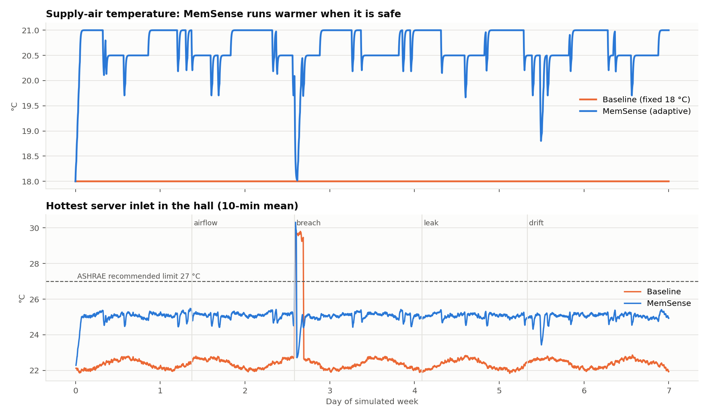
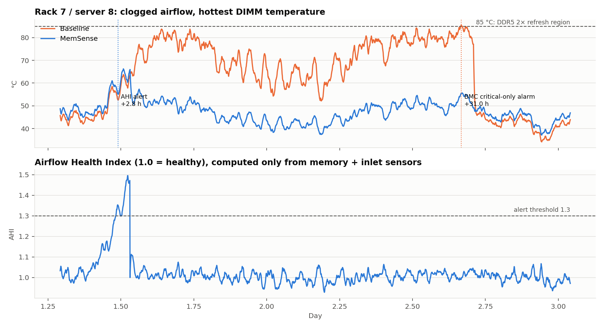

Memory-Aware Thermal Intelligence for Sustainable Data Centres
Data centres use about 30–40% of their electricity just for cooling, and in India they also use 1.5–2.5 litres of water for every kWh. A large part of this is wasted because rooms are kept much colder than they need to be. ASHRAE allows server inlet air up to 27 °C, but most operators run their rooms at 18–22 °C. They do this because a hall usually has only a few temperature sensors on the walls, so hotspots between racks are not seen until it is too late.
This problem is growing. India's data-centre capacity is expected to rise from about 1.5–2 GW in 2025 to somewhere between 3 and 12 GW by 2030. New AI servers also use liquid cooling, which brings new risks such as condensation and leaks, and humid, polluted air in Indian cities can corrode electronics.
I noticed that servers already contain a sensor network that almost nobody uses: every DDR5 server memory module (RDIMM) already has three built-in temperature sensors, and every NVMe SSD reports its own temperature. A full rack of 40 servers with 16 memory modules each has around 2,000 of these sensors, placed right where the heat is, but today they are only used to control each server's own fans.
MemSense uses these existing memory sensors as a room-wide temperature network. It has three parts:
I also defined two new measures. The Airflow Health Index detects blocked airflow inside a server using only its memory temperature, and the Memory Thermal Margin shows how close each server's memory is to 85 °C, above which DDR5 must refresh twice as often and loses bandwidth.
Safety comes first: the system warms the room slowly but cools it immediately, it starts in advice-only mode, and the cooling units go back to their normal settings if MemSense stops working.
I researched the problem, designed the sensor node on paper (parts list, block diagram and security), and built a working simulation in Python of a 20-rack data hall over one week. Both the normal setup and MemSense were given exactly the same weather, workload and faults so that the comparison is fair.
| Result | Normal setup | With MemSense |
|---|---|---|
| Cooling energy (Bengaluru, November) | 6,593 kWh | 6,197 kWh (6% less) |
| Cooling energy and water (Delhi, January) | – | 23% and 22% less |
| Time racks spent above 27 °C | 301 rack-min | 66 rack-min |
| Condensation on a humid day* | 710 min | 0 min |
| Slowly clogging server flagged after (by the Airflow Health Index) | 31 hours | 2.8 hours |
| Coolant leak found after (by the leak rope sensor) | 110 min | under 1 min |
| False alarms | 0 | 0 |


*The normal setup here uses fixed 15 °C water with no dew-point control. Commercial cooling units already control water temperature to avoid condensation, so this shows the size of the risk. What is new in MemSense is that it measures the actual pipe temperature and shares one room dew point across all racks.
In Bengaluru there are no free-cooling hours, so the saving comes from the assumed chiller efficiency gain per °C. Across the 2–5% per °C range in the literature, the cooling saving is 4.1–9.5% (6% at the 3% I used). Detection results are single simulated events: the normal setup only raises an alarm when memory reaches 85 °C.
These results come from a simplified simulation, not a real building, and the hardware has not been built yet. Testing on real equipment is the next step.
I plan to sell MemSense as hardware plus a yearly software subscription per rack. For larger sites, a savings-share option would let the customer pay from the money they save. The first customers would be company (enterprise), campus and hyperscale data centres in India, where one organisation owns both the building and the servers. In colocation data centres the operator does not own the tenants' servers, so reading their memory sensors needs tenant consent; there the sensor nodes and AI can still be used on their own. Later markets are AI halls with liquid cooling, small edge server rooms and semiconductor facilities.
| For every 1 MW of servers (estimate) | Amount |
|---|---|
| Hardware cost (about 120 rack nodes, 12 row nodes and a gateway) | ≈ ₹8 lakh |
| Modelled saving per year (Bengaluru) | ≈ ₹17 lakh |
| Payback time | under 1 year |
Existing monitoring products add their own room sensors or only work with one cooling brand. MemSense is different because it uses sensors that are already inside every server, works with any cooling system and is designed for Indian conditions. I plan to file a provisional patent on the Airflow Health Index and the memory-based sensing method.
| Stage | What I will do |
|---|---|
| Year 1 (with SOLVE) | Build 5 rack nodes and 1 row node, test them with real DDR5 memory, and run a pilot in a BITS campus server room. File a provisional patent and present the results to Micron. |
| Year 2 | Run pilots at a Micron facility and 2–3 outside data centres. Register the company, join the BITS incubator, apply for startup grants and get the first paying customers. |
| Year 3 | Launch a certified product, partner with cooling companies and system integrators, and raise seed funding. |
| Beyond | Expand across India and then to other hot, humid regions such as Southeast Asia and the Middle East, and extend MemSense to AI data centres and cleanrooms. |
Sources: cooling, water and temperature figures are referenced in docs/01_research_notes.md of the repository. India capacity forecasts are from Wood Mackenzie, Rubix Data Sciences, Avendus Capital and Axis Capital (2025–26).